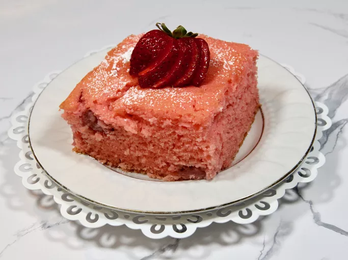

looks yummy
Description
rather than usual choclate cakes. this is made by goodness of fruits
Home cooks of all levels praise this simple method for creating fluffy, delicious cake any time.
Ingredients
- ½ cup buttermilk
- 4 ounces frozen strawberries
- 3 tablespoons all-purpose flour
- 4 eggs
- ⅔ cup vegetable oil
- 1 (3 ounce) package strawberry flavored Jell-O®
- 1 (18.25 ounce) package white cake mix
Steps
- Gather all ingredients.
- Thaw and drain the frozen strawberries.
- Preheat oven to 350 degrees F (175 degrees C). Lightly grease on 9x13 inch cake pan.
- Combine the white cake mix, strawberry gelatin, oil, eggs, flour, thawed strawberries, and buttermilk and mix until just combined. Pour batter into prepared pan.
- Bake at 350 degrees F (175 degrees C) for about 25 to 35 minutes or until a toothpick inserted in the center comes out clean.